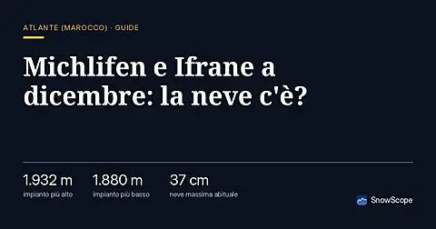
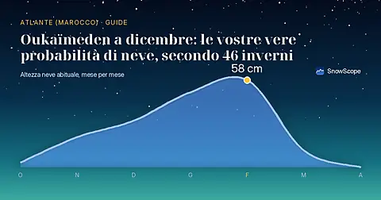
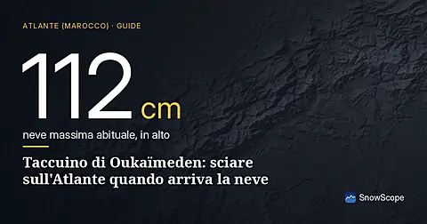

Bollettini neve · Atlante (Marocco)
Bollettini neve quotidiani per sciatori: dove c'è neve, cosa arriva e dove sciare, dalla mappa neve di SnowScope e dalle stazioni di misura. Ogni numero viene dai dati del giorno.

A Oukaïmeden, dicembre dà 18 cm a metà montagna in un mese tipico, contro 44 cm a febbraio e 53 cm a marzo. Cosa dicono 46 inverni sul mese giusto per sciare.

A Michlifen, l'89 % degli inverni non ha quasi neve il 15 dicembre (meno di 5 cm). Cosa dicono 46 inverni sullo sci nel Medio Atlante a dicembre.

Oukaïmeden a metà dicembre: 16 cm a metà montagna in un inverno tipico, 50 cm o più in solo l'11 % degli inverni. Data per data, cosa dicono 46 inverni.

Oukaïmeden è a 50 km in linea d'aria da Marrakech. Come riuscire in un weekend di sci a dicembre: quando partire, quali probabilità di neve, cosa si sa dei prezzi.

Les 3 Vallées: 75,70 € al giorno dal 5 al 18 dicembre 2026. Oukaïmeden: nessuna tariffa ufficiale online, 16 cm a metà montagna a metà dicembre. Il confronto onesto.


Quanta acqua potrebbe tenere la neve dell'Atlante a febbraio 2027: la previsione stagionale europea è di circa 3 °C più calda e più umida a ovest e a sud, e le probabilità di neve restano basse sui bacini del Marocco.
La previsione stagionale europea rende gennaio 2027 circa 2 °C più caldo sull'Atlante. La nostra tendenza per altezza della neve, acqua nella neve e acqua immagazzinata per i fiumi del Marocco.

Il Bou Iblane è ancora spoglio. La previsione stagionale europea vede un dicembre nettamente più caldo, e su tutto il Medio Atlante nevoso le nostre probabilità tendono a meno neve.

Ancora niente neve a Oukaimeden. La previsione stagionale europea vede un dicembre più caldo sull'Alto Atlante, e la nostra mappa mostra probabilità più basse su quasi tutte le cime.


Un taccuino pratico su Oukaïmeden, nell'Alto Atlante: quando arriva di solito la neve, quanta, quali pendii scegliere e come arrivare da Marrakech.

Michlifen, vicino a Ifrane, ha neve a brevi episodi più che una stagione. Che cosa mostrano 46 inverni passati, perché l'altezza abituale è zero e come esserci nei giorni giusti.